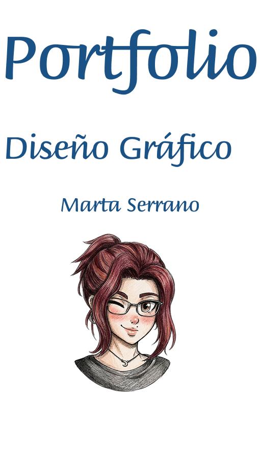
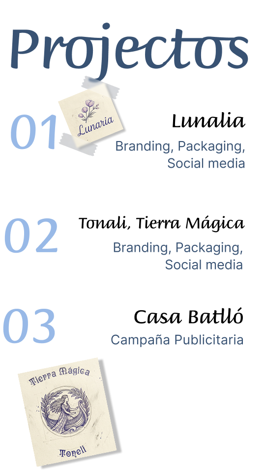


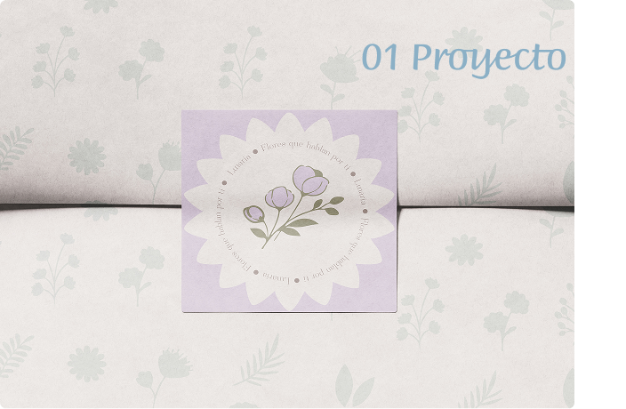
Sobre la marca
La naturaleza no sigue patrones rígidos, y nosotros tampoco deberíamos hacerlo. Lunaria nace como una propuesta de branding que rompe la barrera entre el florista y el espectador. El concepto central gira en torno a la autonomía creativa: una floristería diseñada para quienes ven en un ramo una extensión de sus propios sentimientos. Bajo la premisa de "diseñar sin límites", la identidad visual busca equilibrar la delicadeza orgánica con una plataforma digital intuitiva, permitiendo que cada usuario sea el arquitecto de su propia alegría, desde cualquier lugar.
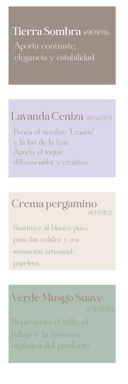
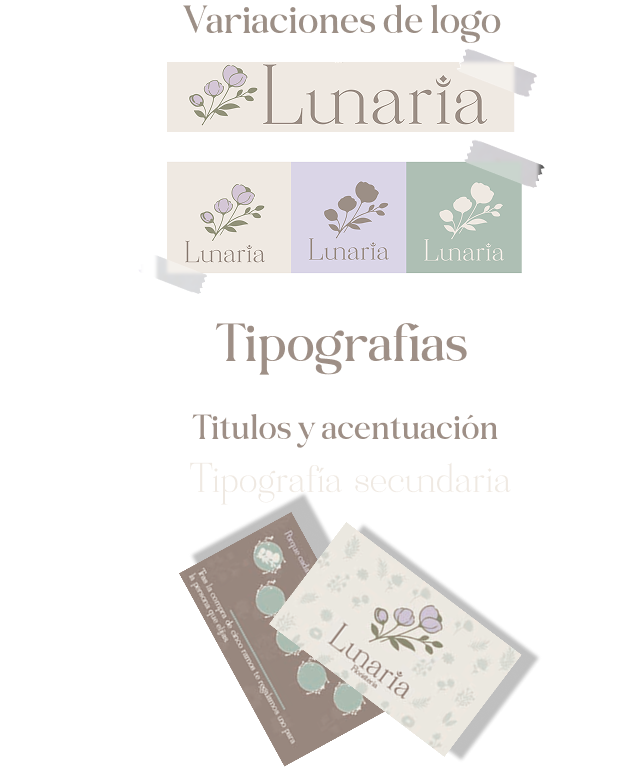
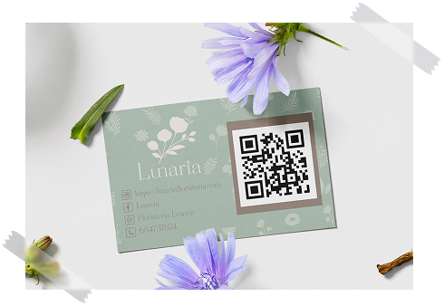
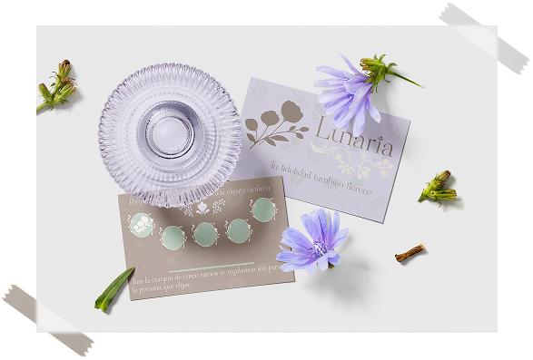
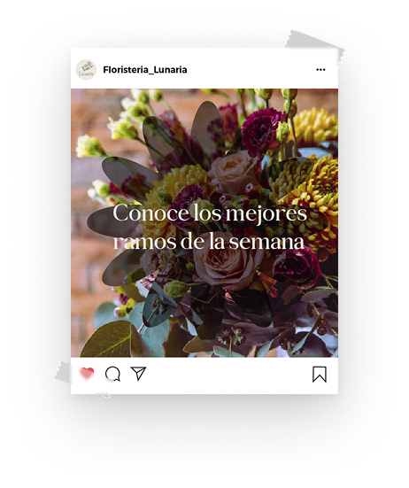
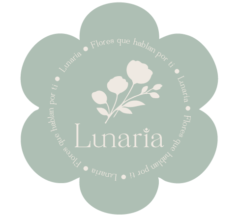
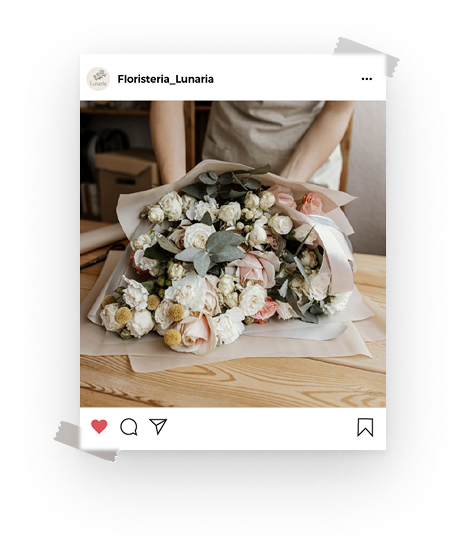

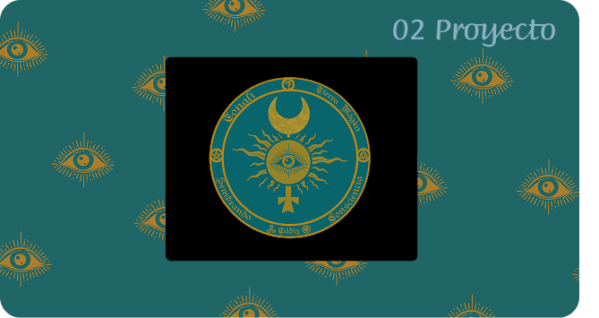
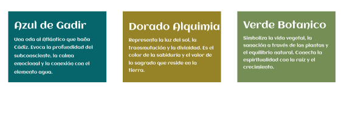
Sobre la marca
Tonali nace de la unión entre la sabiduría ancestral de la tierra y la energía vital que reside en cada ser. Es una marca dedicada a la creación de productos naturales y herramientas espirituales que actúan como puentes entre lo tangible y lo sagrado. El concepto visual se inspira en la Alquimia y las raíces históricas de Cádiz, una de las ciudades más antiguas de Occidente. El logotipo es un tótem de protección y conocimiento: partiendo del símbolo de Mercurio, la identidad evoluciona integrando un Sol y una Luna en equilibrio, custodiados por un tercer ojo que simboliza la intuición y la visión espiritual. El diseño se abraza con simbología y tipografía celta, rindiendo homenaje al legado místico que el océano ha traído a las costas gaditanas a lo largo de los siglos..
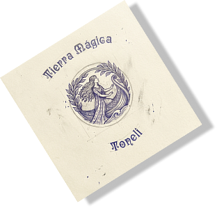
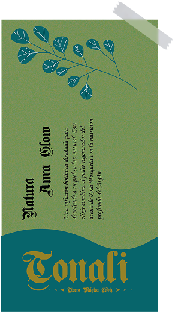
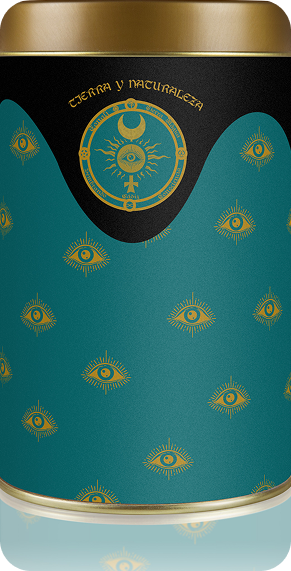
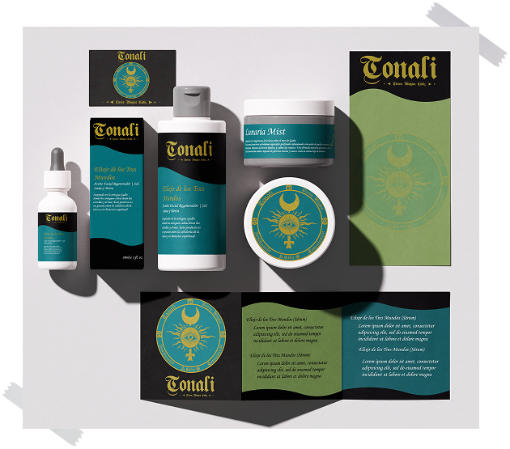
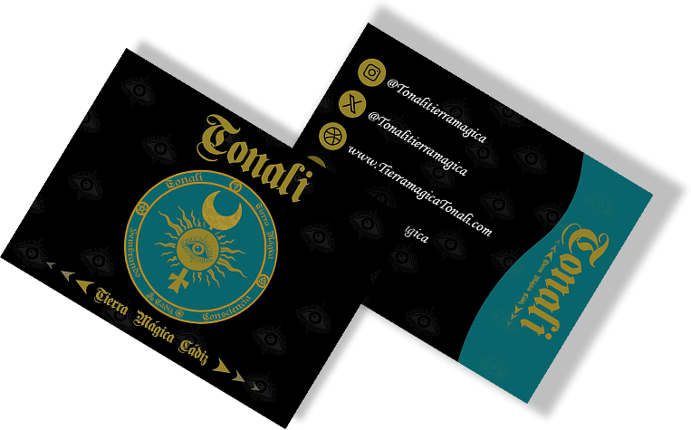
6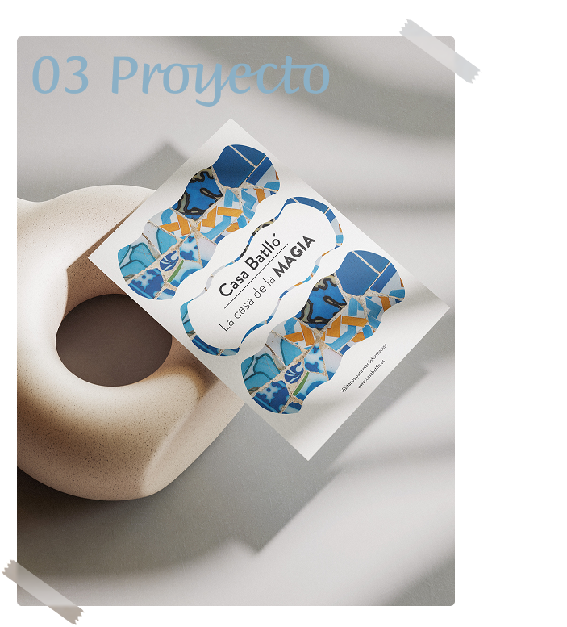
Campaña publicitaria | Casa Batlló
Diseño y conceptualización de una campaña publicitaria destinada a reposicionar la Casa Batlló como el epicentro de la creatividad y el diseño disruptivo en Barcelona. El objetivo principal es atraer a nuevas audiencias mediante una narrativa visual que capture la esencia viva de la obra maestra de Antoni Gaudí. Hoy en día, la Casa Batlló no es solo un monumento Patrimonio de la Humanidad; es una marca de experiencias culturales de vanguardia, fusiona la restauración meticulosa con la innovación tecnológica, se ha transformado en un museo vivo que dialoga con el futuro, invitando al visitante a explorar un universo donde la arquitectura, la luz y la fantasía no tienen límites.
Concepto|
Esta campaña publicitaria para la Casa Batlló nace de la premisa de que el edificio no es una estructura estática, sino un organismo vivo. Inspirándome en las formas orgánicas y el simbolismo de la leyenda de Sant Jordi que Gaudí plasmó en la fachada, la serie de carteles busca capturar la vibración de la luz sobre el trencadís y la anatomía ósea de sus balcones.
Primeros Diseños|
En un principio siguiendo la marca visual minimalista de la nueva marca moderna de la Casa Batlló realicé unos bocetos y artes conceptuales que se asemejasen a la identidad visual que la marca maneja en todos sus prototipos visuales y web. Pero faltaba ese toque visual llamativo que se identifica al nombre “Gaudí” por lo que manteniendo la base de los diseños nos movimos hacia incluir ese toque especial.
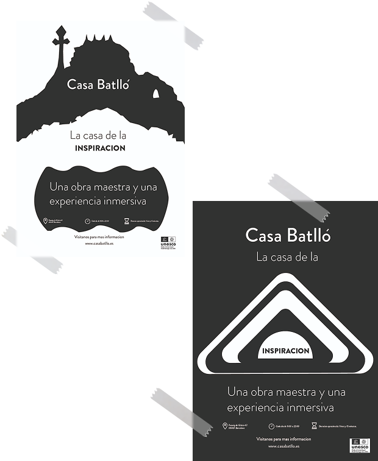
Estrategia visual|
Para trasladar la experiencia sensorial de la visita y los tan llamativos colores de Gaudí, me centré en mantener las formas orgánicas, la historia de Sant Jordi que se refleja en la estructura e incluí la textura del trencadís, uniendo el minimalismo de la marca con el color y textura del artista. Creando así tres grandes carteles y un flayer.
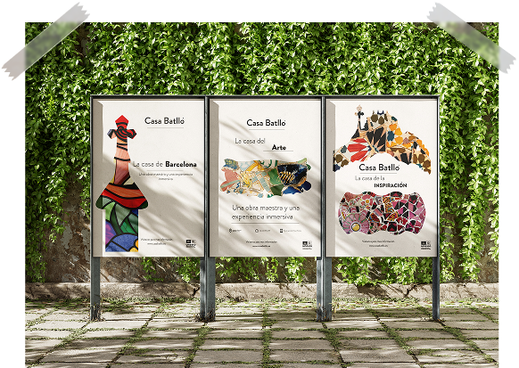
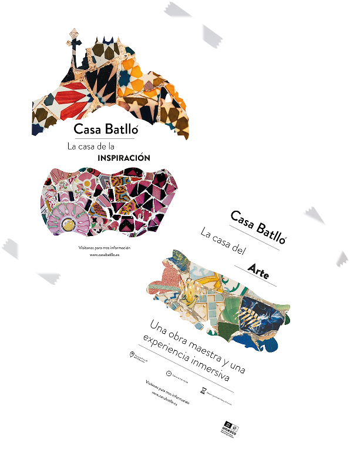
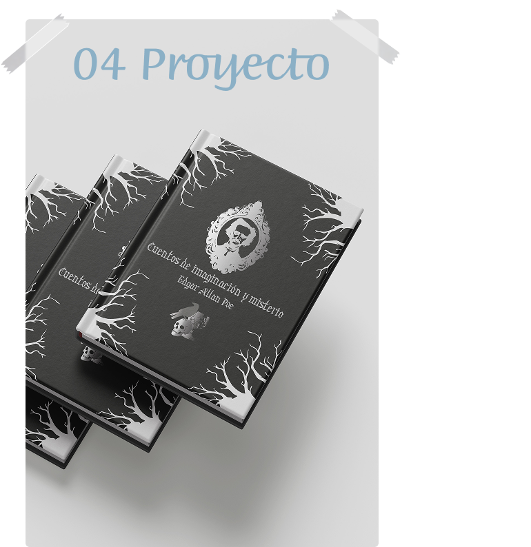
Cuentos de imaginación y misterio | Diseño Editorial
Diseño editorial y maquetación de una antología de lujo que reúne las obras maestras de Edgar Allan Poe. Este volumen ha sido concebido como un objeto de colección, donde la tipografía, el ritmo visual y la ilustración se entrelazan para potenciar la atmósfera de terror gótico y análisis psicológico característica del autor. Desde "El corazón delator" hasta "El cuervo", cada página ha sido diseñada para sumergir al lector en una experiencia multisensorial.
Sobre la obra|
Cuentos de Imaginación y Misterio no es solo una recopilación; es un viaje a las profundidades de la psique humana. Esta edición rinde homenaje al legado de Poe, integrando ilustraciones exclusivas que dialogan con el texto para resaltar lo macabro, lo sublime y lo melancólico. El diseño busca equilibrar la sobriedad del género clásico con soluciones gráficas contemporáneas, convirtiendo el libro en un artefacto físico que captura la esencia del misterio que ha fascinado a generaciones.
Concepto|
Para reflejar la naturaleza inquietante y profunda de la prosa de Poe, se han aplicado los siguientes criterios conceptuales: La puesta en página utiliza el vacío y las sombras como elementos compositivos. El diseño editorial abraza la oscuridad, permitiendo que el texto emerja de entre las sombras, replicando la sensación de misterio que precede a lo desconocido. Se ha optado por un tratamiento gráfico de alto contraste, donde todas las ilustraciones se presentan en escalas de grises profundos. Esta técnica refuerza la estética gótica y permite que el ojo se concentre en la textura y el detalle macabro sin distracciones.
En cada relato, la monocromía se rompe estratégicamente mediante el resalte de un único color. Este matiz no es meramente decorativo; actúa como un hilo conductor simbólico —ya sea el rojo de la sangre, el dorado de un tesoro maldito o el violeta de la melancolía—, creando un punto focal de tensión que intensifica la carga emocional de la escena.
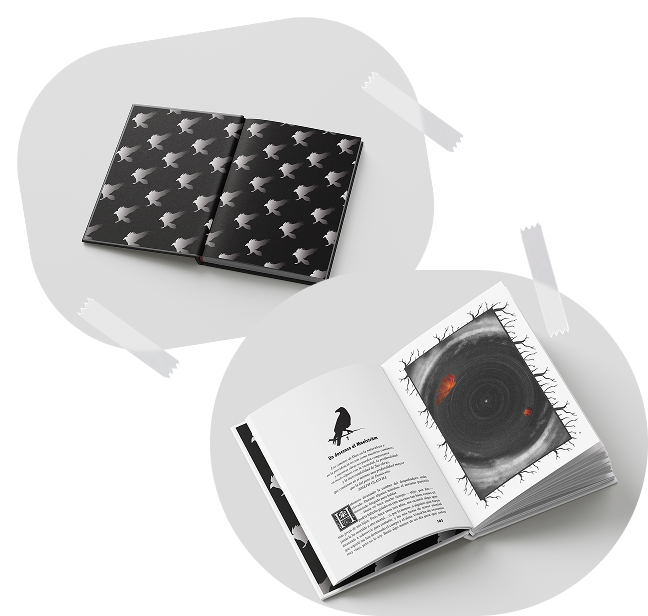
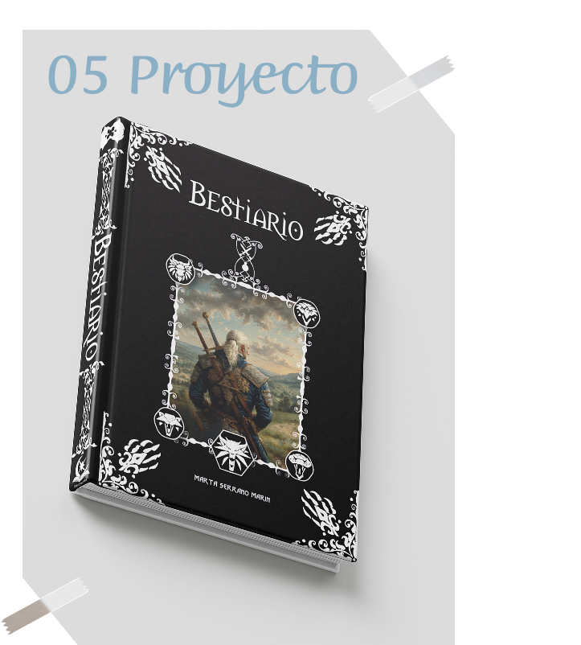
Bestiario| Proyecto editorial
Esta pieza editorial es una recopilación definitiva diseñada tanto para el uso funcional como para el coleccionismo. El proyecto nace del reto de conectar las tres realidades del universo de The Witcher: la narrativa literaria de Andrzej Sapkowski, la adaptación visual de la serie y la interactividad de los videojuegos. El resultado es una edición integral que cataloga cada criatura mencionada en el canon, fusionando datos técnicos, debilidades y anatomía en un diseño que evoca los antiguos grimorios de los brujos.
Concepto|
El diseño integra estéticas de diferentes formatos (libros, videojuegos y televisión) para crear una identidad única y coherente. Se han unificado las características de cada bestia para ofrecer la guía más completa y detallada existente hasta la fecha.
Tipografía y elementos|
La maquetación utiliza una tipografía que equilibra la legibilidad moderna con la caligrafía clásica de los manuales de alquimia. El objetivo es que el lector sienta que posee un objeto que podría pertenecer al inventario de un brujo de la Escuela del Lobo.
Ilustración|
Cada criatura está acompañada de una ilustración que mezcla el realismo anatómico con un estilo artístico oscuro. Estas piezas no solo decoran, sino que sirven de referencia visual para el estudio de las bestias, resaltando sus rasgos más peligrosos y su escala.
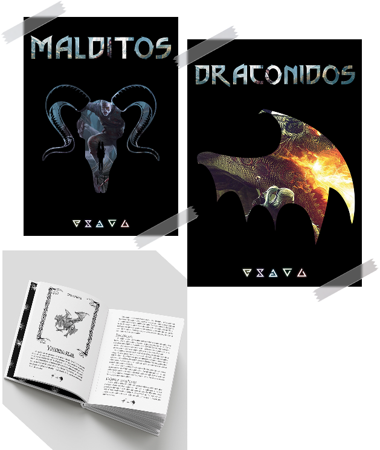
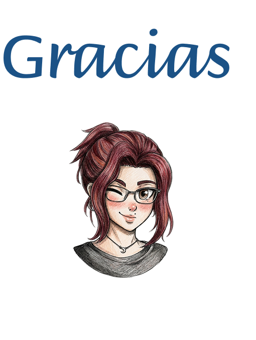